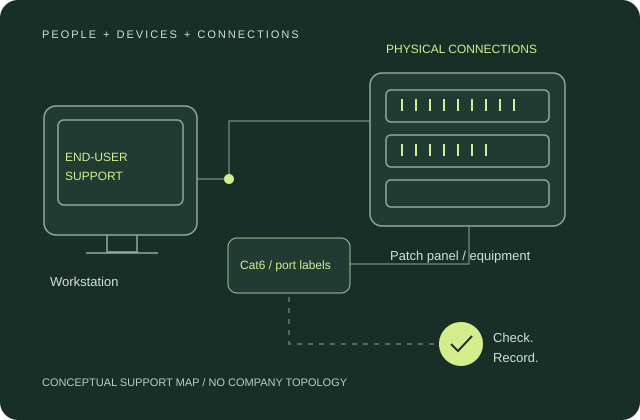

01 / Relocation
Direct + supervised
Equipment removal & reconnection
Removed assigned IP cameras, attendance hardware and desk patch cords; assisted with physical rack and server handling.
A Digital & Technology internship spanning office relocation, physical connectivity, end-user support and digital customer assistance.

Original conceptual support graphic. No company topology or identifiers. Select to inspect.
A logistics office depends on a chain of small, connected services: the workstation, the network, the printer, the online shipping account and the person using them.
My Digital & Technology internship at Aramex Dhaka Ltd. ran from 9 June to 9 September 2026, during an office relocation in Dhaka. Working alongside IT staff connected my studies to the practical needs of an operating workplace.
My role combined directly assigned tasks, supervised assistance and observation. The useful contribution was to handle my part carefully, understand the next dependency and leave clear information for the responsible staff.
Removed assigned IP cameras, attendance hardware and desk patch cords; assisted with physical rack and server handling.
Connected workstation links, matched outlet labels to recorded ports, and assisted with router and wireless AP placement.
Helped with online registration, email verification and approved business account linking; recorded guidance for reuse.
Operated the Canon multifunction printer, followed queue and connection checks, and assisted with Windows 11 and Office 365 laptop preparation.
Entered authorised users in Fastface 5 under supervision.
Reviewed asset and network connection records for incomplete mappings; prepared recurring Excel billing information for supervisor review.
This is a reflection of the support discipline I learned. It is not a claim of a measured service improvement or a formal process I introduced company-wide.
One recurring task was explaining the difference between a personal website profile and an approved business shipping account. A customer could have a valid login but still need the correct business association before using account-based shipment functions.
I guided registration, email verification and linking, documented interactions and produced a reusable screen recording. Account approval and commercial details remained with authorised staff.
Match the explanation to the customer's current screen, use familiar words and check the specific error rather than restart the whole workflow.
Keep account credentials and customer records within approved support channels. The public portfolio includes no customer data or internal recording.
Relocation and support work gave me practical exposure to workstation connections, patch panels, switches, routers, access points, IP cameras, NVR equipment and attendance devices. I also learned the roles of server-room cooling and UPS support.
A branch visit introduced Starlink obstruction monitoring and the parcel weighing/dimensioning workflow. These were learning and observation activities; they do not establish measured network performance or configuration responsibility.
Procurement enquiries for faceplates and courier handsets also taught me to separate specifications, availability, terms and budget approval. Parcel measurement and shipment-document exercises strengthened attention to units and consistent records.
A practical action is more useful when the next person can understand what was checked, what changed and what still needs attention.
The placement strengthened my patience with users, physical network awareness and documentation habits. It also taught me when to ask for guidance and how to report an incomplete or uncertain result accurately.
My contribution is supported by task records and guidance materials. The records do not support claims of zero downtime, quantified savings, a customer resolution rate, or completed acceptance of every laptop.
Content grounded in the updated CV and complete internship report. Descriptions distinguish performed tasks, supervised assistance, assignments and observation.
For IT support, technical support and network opportunities, connect with me or take a copy of my public CV.
Download public CV